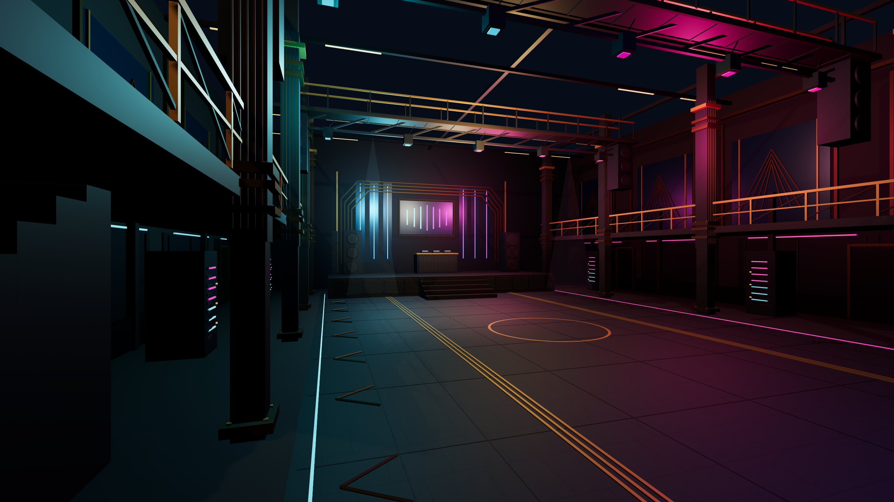
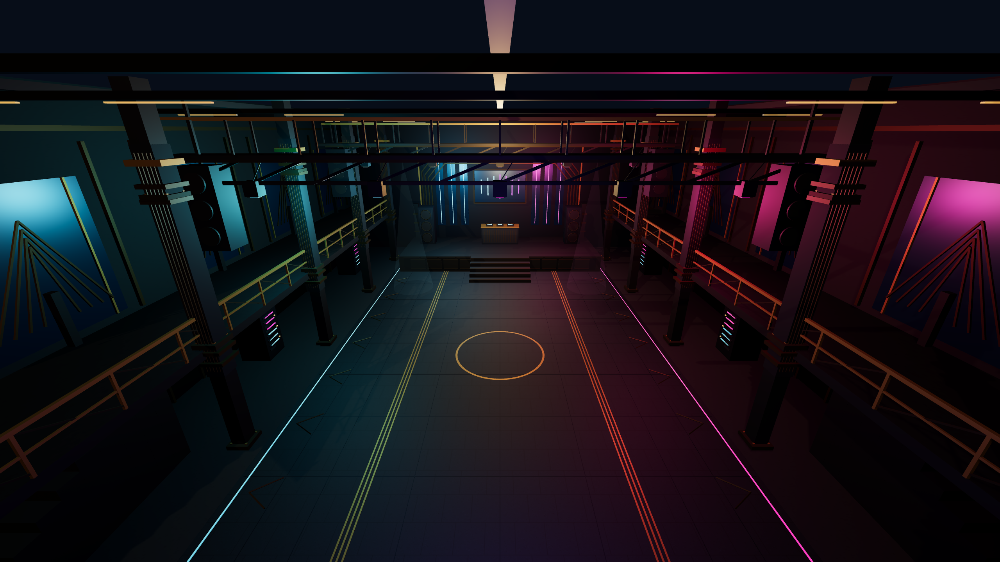
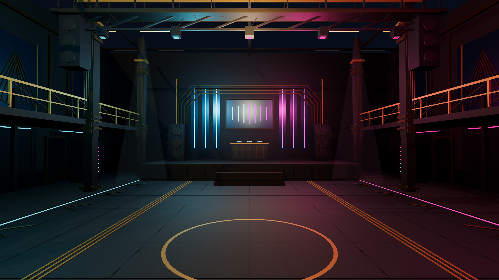

BG04–06 · Propuesta de escena compartida
Propuesta no integrada ni aprobada. Misma escena, cámaras y luces; detalle añadido sobre 08C6. Los renders son nativos 2560 × 1440. Abrir escena editable · Descargar GLB · Versión anterior.


